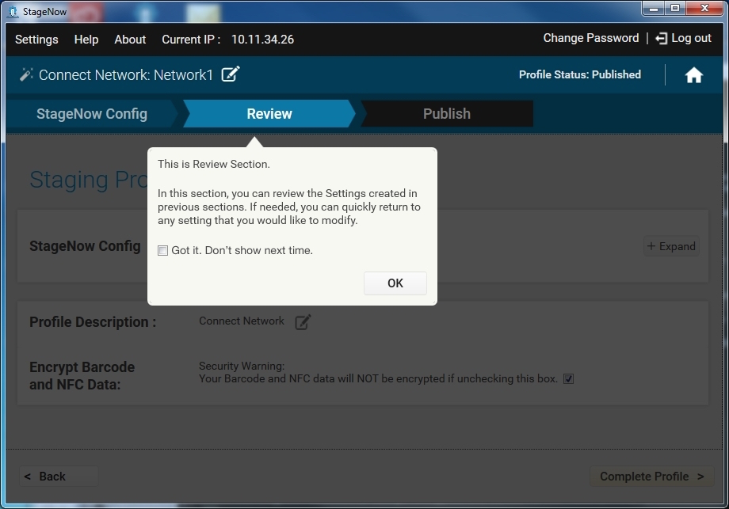
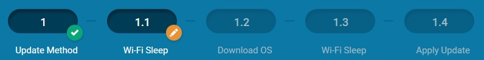
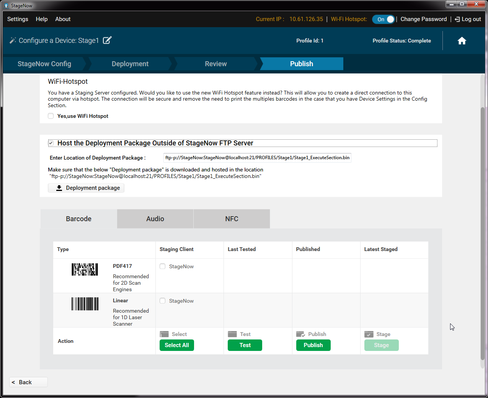
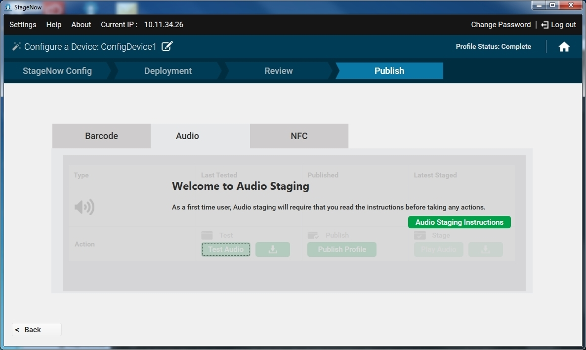
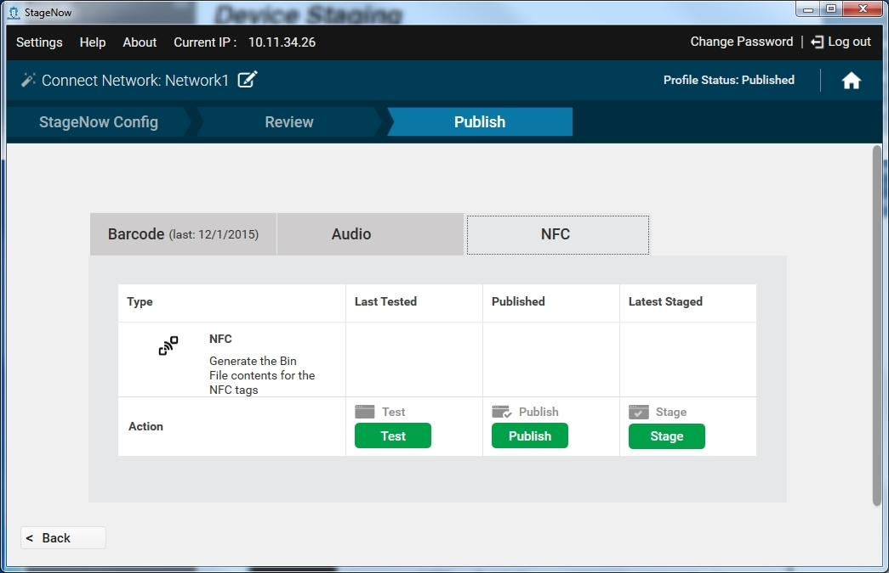
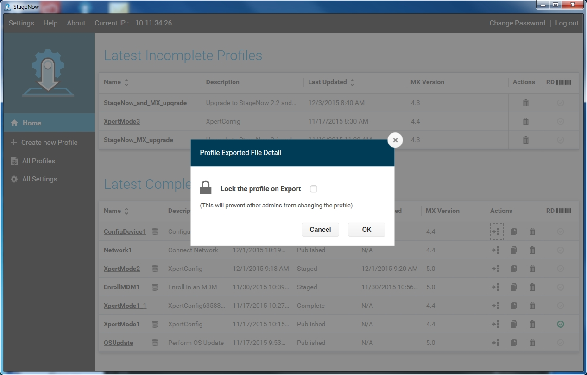
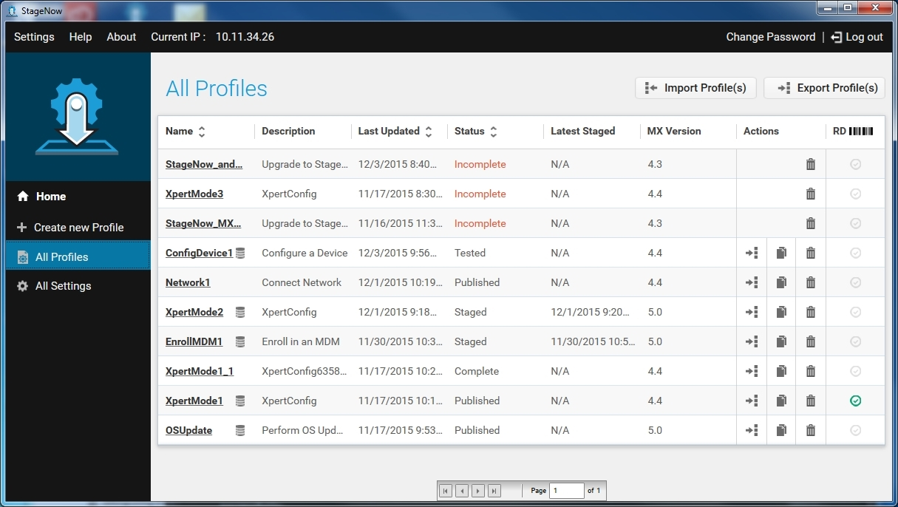
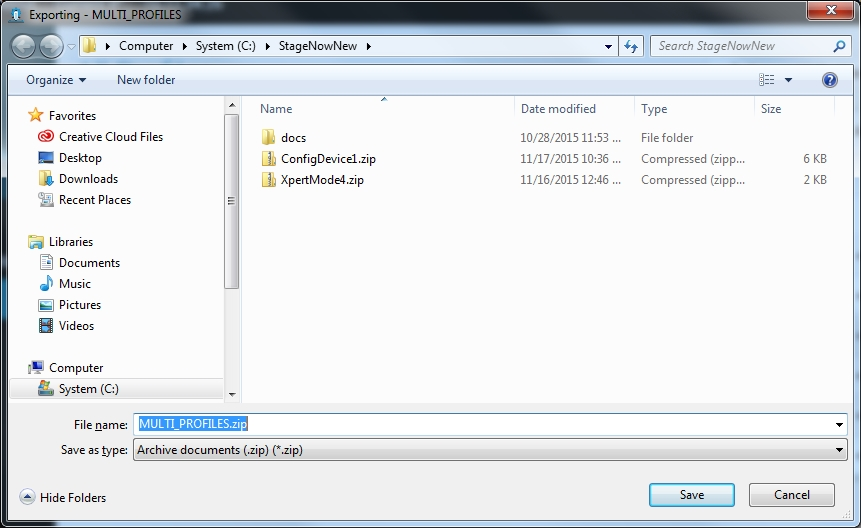

概述
本部分向部署管理员提供有关创建和管理配置文件的信息。StageNow 工作站工具提供表示企业内移动设备部署信息常见用例的预定义向导。
欢迎提示
整个工作站工具的多个屏幕提供有用的弹出窗口提示。选择提供的复选框以永久消除提示。选择“确定”以关闭弹出窗口。

创建部署配置文件
部署管理员使用提供的 StageNow 向导来配置定义企业设备软件配置和安装的设置。创建部署设备的配置文件时，管理员将在工作站工具提供的横幅中执行以下步骤：

配置（StageNow 和 RD）- 将在 StageNow 配置部分输入的设置信息存储在 StageNow 条码、NFC 标签和/或音频文件中。将在“RD 配置”部分中输入的设置信息存储在 RD 条码中。请注意，只有您在设置屏幕打开“传统模式”时才会出现 RD 配置部分。本部分中创建的设置数量会影响到条码和/或系统稍后生成的 NFC 标签的数量。
部署 - 此信息包含未驻留在 StageNow 条码、NFC 标签或音频文件中的设置，并表示为 StageNow 部署服务器上的文件，因此需要网络连接。读取条码或 NFC 标签或播放在设置部分创建的音频文件将客户端设备连接到服务器，并指向此部署文件。请注意，此部分不会出现在“连接网络”、“管理设备安全性”和“擦除设备”向导中。
审核 -“审核”部分介绍在单个页面中配置和部署部分输入的所有设置信息。管理员可以添加备注、完成配置文件或返回到任何设置以对其进行更新。
发布 -“发布”部分允许管理员选择已完成配置文件以及测试、发布和部署配置文件的交付方法（线性条码、PDF417 条码、NFC 标签或音频文件）。
配置文件状态
通过向导行进时，窗口右上角反映了该配置文件的状态：

未完成 - 配置文件尚未完成。
完成 - 向导所需的全部信息均包含在该配置文件中，但它尚需进行测试以确保配置文件功能符合预期。
测试 - 已对配置文件进行了测试，以确定其是否足以用于部署操作。操作员尚未看到它。
已发布 - 该配置文件对操作员可见。
已部署 - 操作员已经获得了该配置文件，即已生成条码，导出的数据写入 NFC 标签，或已下载用于部署设备的音频文件。
导航向导
以下是在向导中导航的提示。
单击主横幅多个部分（例如 StageNow 配置、RD 配置）以查看该部分。请注意，您必须按顺序完成每一部分，然后才能单击进入下一部分。
您还可以使用“后退”按钮返回到上一部分和使用“继续”按钮以继续下一部分。

同样，单击辅助横幅中的椭圆按钮以查看该子部分。您还必须完成每一子部分，然后单击进入下一部分。

每个椭圆按钮旁边的小圆形按钮指示该部分的状态：
绿色的复选图标表示该部分已完成。
绿色眼睛图标表示您正在查看的部分。
带铅笔的橙色图标表示该部分正在处理。
带暂停的橙色图标表示您正在查看其他部分时正在处理中的部分。
没有相邻圆形按钮的灰色椭圆表示尚未开始的部分。
您还可以在辅助横幅的开头和末尾使用箭头以滚动浏览这些子部分。

当您为辅助横幅项目中选择“是”时，则会将附加的子部分添加到横幅。

要编辑配置文件名称，请单击名称旁边的铅笔图标。

在任何时候，单击“主页”按钮以返回到主屏幕。

在向导中填充设置模板窗口时，要使设置在创建其他配置文件时可供选择，请选择“保存设置以供重复使用”复选框，并输入该设置的名称。有关更多信息，请参阅保存以供重复使用。
配置
要创建配置文件，请打开 StageNow 工作站工具并登录。
选择“新建配置文件”，然后从下拉菜单中选择设备 MX 版本。在配置未来配置文件时，该工具将保留当前的选择。
最初，出现一则警告，指示选择版本不正确可能会导致部署失败。如果您的设备运行多个 MX 版本，请选择常见的最低版本。如果不需要在将来的配置文件创建中查看该复选框，请在此窗口上选择该复选框。

从下列向导选择一个，然后选择“创建”。
完成向导的 StageNow 配置和 RD 配置部分后，继续执行向导的下一部分。某些向导包括“部署”部分，而有些则转到“审核”部分。
MX 选择
从 MX 版本下拉菜单中选择 MX 6.x 或更高版本支持某些向导的 Wi-Fi 热点选项。如果为适用的向导选择 MX 6.X，则第一个向导窗口将显示从下拉菜单中选择下列选项之一的提示：
“我希望提供的设备当前未连接到网络。我将定义将用于部署并具有此配置文件的网络。”
“我希望提供的设备已连接至将用于部署的网络。”
“我希望使用 WiFi 热点功能，该功能将自动创建使用此计算机网卡进行部署的网络。”

选择选项，然后继续执行选定向导的说明。
MX 备注
- 上面第二个和第三个选项仅受使用此工具“部署”部分的向导支持。
- StageNow 3.0 和更高版本支持插件 CSP，通过从 StageNow 主屏幕菜单选择 CSP 库访问（如下所示）。

部署
使用向导“部署”部分以指定定义配置文件功能的设置的子集，并将这些设置存储在部署服务器上。有关说明，请参阅特定配置文件向导。
注意：本部分在某些向导不可用。
包括“部署”部分的向导要求设备访问“部署服务器”以获得此处提供的信息。具体而言，设备和服务器应该位于同一网络，或应该从允许连接到“部署服务器”的设备网络路由。

审核
向导的“审核”部分允许您验证您的选择。

选择“展开”以查看 StageNow 配置和 RD 配置设置。此设置列表提供以下字段：
- 步骤 - 管理员添加设置的各部分步骤。
- 描述 - 用户定义的“友好”设置描述。
- 上次更新时间 - 上次配置文件更新的时间。
- 查看 - 单击可查看/修改设置。
选择“更改”可以对设置进行任何更改。
选择“配置文件描述”旁边的图标以输入配置文件的描述。

输入描述并选择“保存”。
默认情况下选择部署数据加密以保护配置文件条码或 NFC 标签中已编码的敏感数据。有关更多信息，请参阅 StageNow 加密。如有必要，请取消选择该复选框以节省空间。
选择“完成配置文件”以继续进入“发布”窗口。屏幕右上角的“配置文件状态”现为“已完成”。
发布
向导的“发布”部分允许您选择部署方法、测试配置文件功能的方法，并使该配置文件可供部署操作员使用。
此窗口列示可用的配置文件交付类型，以及上次测试、发布和上次部署配置文件时的日期和时间。
部署条码配置文件
要部署条码配置文件：
选择“条码”选项卡。

要通过热点直接连接，而非使用已配置的部署网络，选中“是，使用 WiFi 热点”复选框。这允许在不需要外部 Wi-Fi 网络的情况下使用单一部署条码进行部署，并且在配置文件发生更改的情况下，无需重新打印条码。
要从服务器上存储的内容部署设备，请选中“在 StageNow FTP 服务器外部托管部署包”，并使用源 URI 语法输入地址和位置。支持 HTTP、HTTPS、FTP 和 FTPS（通过 TLS 或 SSL 的 FTP）协议和嵌入式 URL 凭据的基本身份验证。
选择 PDF417 或“线性”复选框以指定部署条码的类型，或选择“全选”以选择所有条码类型。
选择“测试”以在发布前测试配置文件的功能。这将生成测试部署条码的 PDF 文本。虽然此步骤可选，但重要的是确定配置文件是否按预期功能运行，然后才能将其提供给部署设备的操作员使用。
如果部署材料功能正常，请选择“发布”以发布操作员使用的材料。请注意，管理员可以选择仅发布之前已测试成功的某些类型的条码，并且在准备就绪时发布其他条码。
输入操作员的部署说明。

选择“立即发布”。

要使配置文件可用于部署，请选择“部署”。此操作将生成设备可部署扫描的条码 PDF 文件。请参阅设备部署。
要导出 MDM 或 StageNow 的配置文件，请选择“为 MDM 导出”或“为 StageNow 导出”按钮。请参阅导出部署配置文件。
要取消发布配置文件以删除操作员访问，请选择“取消发布”。
部署音频配置文件
要部署音频配置文件：
选择“音频”选项卡。如果这是第一次使用此功能，则导航提供指定用于部署的技术和环境要求的帮助屏幕。

通过指示屏幕进行，然后选择“完成”以关闭导航。

要通过热点而非使用已配置的部署网络创建直接连接，选择“是”，使用“直连 Wi-Fi”复选框。
选择“测试音频”播放文件以验证发布之前的功能，或选择“下载”图标以保存测试之前的音频文件。虽然此步骤可选，但重要的是确定配置文件是否按预期功能运行，然后才能将其提供给部署设备的操作员使用。

如果音频文件功能正常，选择“发布配置文件”以发布操作员使用的音频文件。
输入操作员部署说明，然后选择“立即发布”。
要使用音频文件部署客户端，请选择“播放音频”，或“下载”以保存音频文件，以供其他管理员或操作员使用。请参阅设备部署。
要导出 MDM 或 StageNow 的配置文件，请选择“为 MDM 导出”或“为 StageNow 导出”按钮。请参阅导出部署配置文件。
要取消发布配置文件以删除操作员访问，请选择“取消发布”。
部署 NFC 配置文件
要部署 NFC 配置文件：
选择 NFC 选项卡。

要通过热点而非使用已配置的部署网络创建直接连接，选择“是”，使用“直连 Wi-Fi”复选框。
选择“测试”以在发布前测试配置文件的功能。此操作将 NFC 标签保存为用于测试的 .bin 文件。虽然此步骤可选，但重要的是确定配置文件是否按预期功能运行，然后才能将其提供给部署设备的操作员使用。
如果部署材料功能正常，请选择“发布”以发布操作员使用的材料。
输入操作员的部署说明。
选择“立即发布”。
要使配置文件可用于部署，请选择“部署”。此操作将 NFC 标签另存为设备部署可读取的 .bin 文件。请参阅设备部署。
要导出 MDM 或 StageNow 的配置文件，请选择“为 MDM 导出”或“为 StageNow 导出”按钮。请参阅导出部署配置文件。
要取消发布配置文件以删除操作员访问，请选择“取消发布”。
复制部署配置文件
要复制配置文件以创建类似的新配置文件：
选择配置文件旁边的“复制”图标。

输入配置文件的新名称，然后选择“保存”。

窗口指示已成功复制配置文件。选择“确定”。
有关编辑新配置文件的说明，请参阅下一部分。
编辑部署配置文件
注意：
升级到最新 StageNow 工具后，在 StageNow 2.0 中创建的正在进行的配置文件可能无法正常工作。
要编辑配置文件：
从主屏幕中选择配置文件。
使用向导中的导航 UI 以查找要更新的设置。请参阅导航向导。

选择“编辑”以启用用于更新的字段。
进行所需的更改并选择“保存”，或选择“取消”以放弃所做的更改。
选择“继续”，然后通过向导继续执行。
在“审核”部分中，选择“完成配置文件”移动“发布”部分以生成更新的条码、NFC 标签或音频文件。
导出部署配置文件
注意：
无法导出未完成的配置文件。
要导出 StageNow 或 MDM 的单个配置：
选择配置文件旁的“导出”图标。


选择是为 MDM 还是在 StageNow 工具内导出。

如果您选择“为 StageNow 导出”，则要锁定配置文件，使其无法更改，并对其他管理员隐藏详细信息，请选择复选框，然后选择“确定”。
为配置文件选择位置，然后选择“保存”。窗口指示已成功导出该配置文件。
选择“确定”。
注意：RD 设置未导出，因此无法导入。
导出所有配置文件
注意：
不导出未完成的配置文件。
要导出所有部署配置文件：
选择“所有配置文件”。

选择“导出配置文件”按钮。
要锁定配置文件，使其无法更改，并对其他管理员隐藏详细信息，请选择复选框。
选择“确定”。

包含所有配置文件的 zip 文件的默认名称为 MULTI_PROFILES.ZIP。为配置文件选择位置，然后选择“保存”。窗口指示已成功导出该配置文件。
选择“确定”。
导入部署配置文件
要导入配置文件：
选择“所有配置文件”。
选择“导入配置文件”按钮。

选择使用“浏览”按钮的文件，然后选择“导入”。窗口指示已成功导入了该配置文件。
选择“确定”。在配置文件列表中显示配置文件。
在导出过程中锁定的配置文件将显示为锁定图标。

将在 StageNow 2.0 中创建的配置文件作为 MX 4.3 配置文件导入。
注意：RD 设置未导出，因此无法导入。
删除部署配置文件
要删除配置文件：
选择配置文件旁边的回收站图标。


选择“确定”以确认删除。
窗口指示已成功删除该配置文件。选择“确定”。
升级配置文件
StageNow 2.3 及更高版本允许管理员将任何已发布或 Beta StageNow 版本中创建的配置文件升级到最新版本，即 StageNow 2.5。